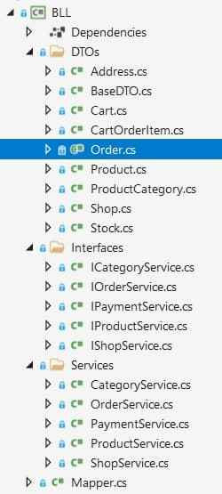

1.1 Тема: ПЕРЕВАНТАЖЕННЯ УНАРНИХ, БІНАРНИХ, ЛОГІЧНИХ ОПЕРАТОРІВ,ОПЕРАТОРІВ ПОРІВНЯННЯ
1.2 Мета: придбати практичні навички роботи реалізації методів перевантаження унарних, бінарних, логічних операторів, операторів порівняння.
1.3 Постановка задачі:
1. Доповнити програмну реалізацію класів методами для перевантаження унарних, бінарних, логічних операторів, операторів порівняння.
2. Протестувати програму.
Перевантаження операторів
Перегрузка операторів відбувається в наступних класах:
Stock: operator--(Stock):Stock, operator>(Stock, int):bool, operator<(Stock, int):bool - унарний та порівняння
Order: operator+(Order, Order):Order - бінарний
CartOrderItem: operator&(CartOrderItem, int):bool - логічний

Середовище розробки: Visual Studio
4.1 Метод перевантаження унарного оператора
4.2 Метод перевантаження бінарного оператора
4.3 Метод перевантаження оператора порівняння
Метод перевантаження логічного оператора
4.4 Файлова структура
Проект розміщенно на GitHub
Посилання
Висновки
У ході виконанная даної лабораторної роботи навчились використовувати методи перевантаження унарних, бінарних, логічних та операторів порівняння.
Доповнили програмну реалізацію класів методами для перевантаження унарних, бінарних, логічних операторів, операторів порівняння. Протестували програму, шляхом запуску програми, введенням та виведенням значень закритих полів.